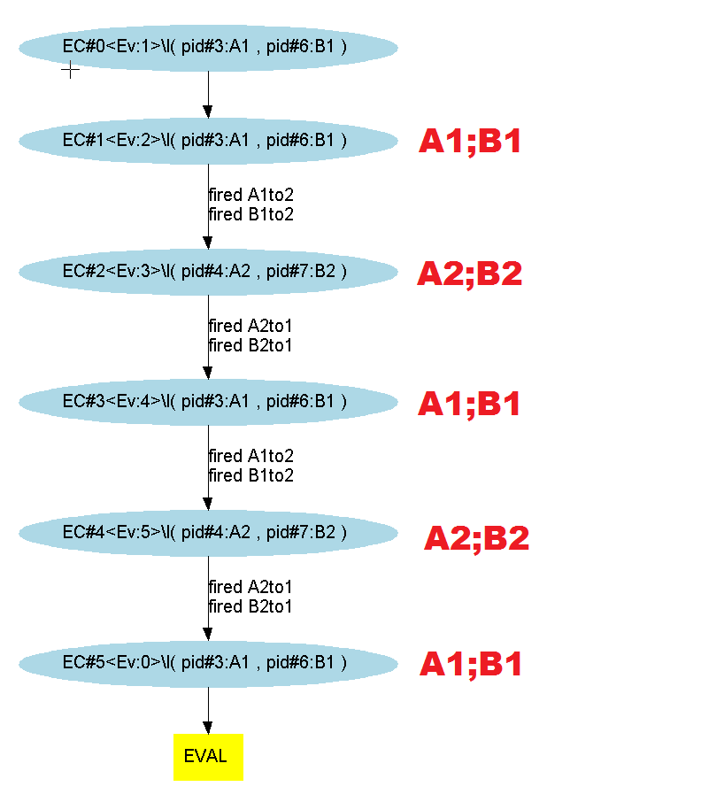
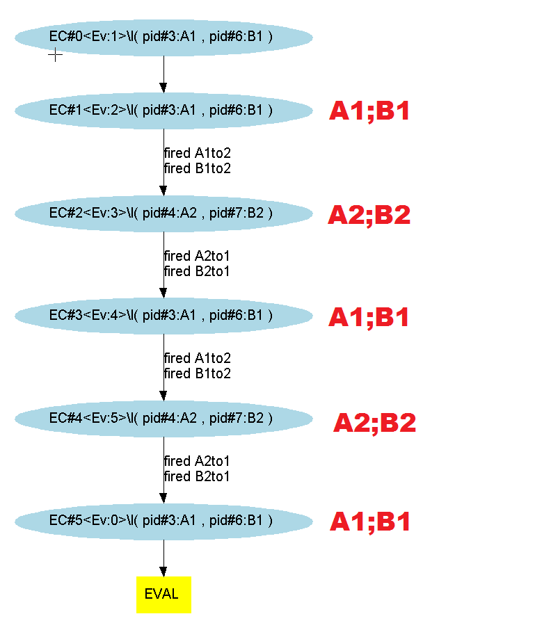

This sequence terminates only if P terminates. If Q does not terminate, the resulting context will be P's resulting context: P side-effects are preserved.
For example, from context EC(CS, VD, BD, PC, ET), if Q does not terminate, the evaluation of a transition labeled with (P |.| Q) will fail, but still, the result will be a new context EC'(CS, VD', BD', PC', ET') with, at least, the same control CS as EC. The evaluation of this transition will be tried again from EC' at the next step.
Considering 2 processes : P and Q, with edge effect sequence we execute first P then Q from the context resulting from the execution of P (non-reflexive operator) :
Applying this on our most basic example, the "@moe:" section looks like :
And exploring the different paths with the symbolic engine (3, 4 and 5 evaluation steps) gives us (here the execution is simultaneous because nothing prevents it from doing so) :

 
